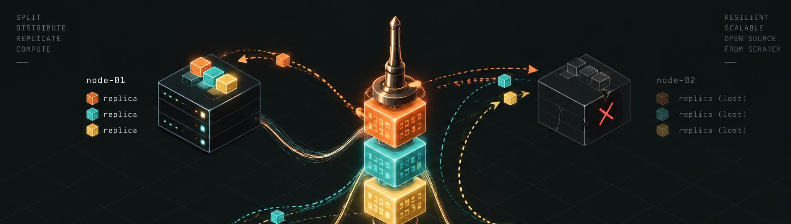
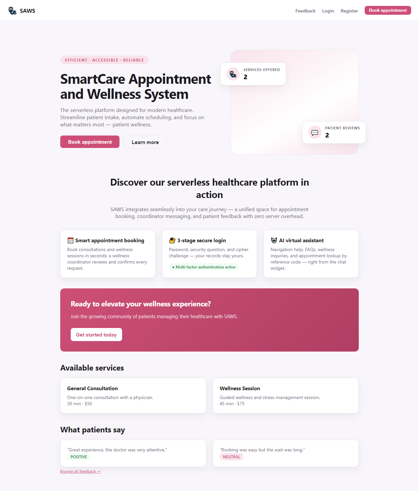
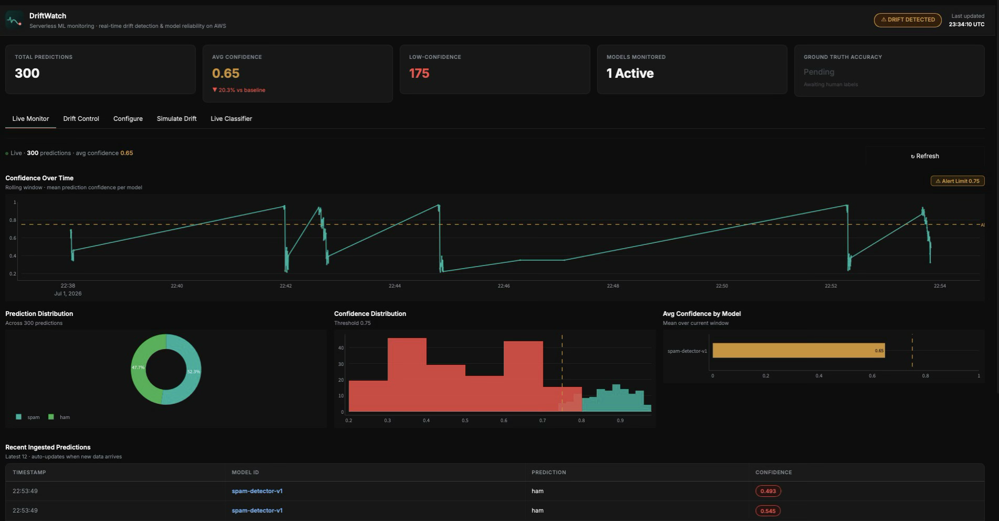
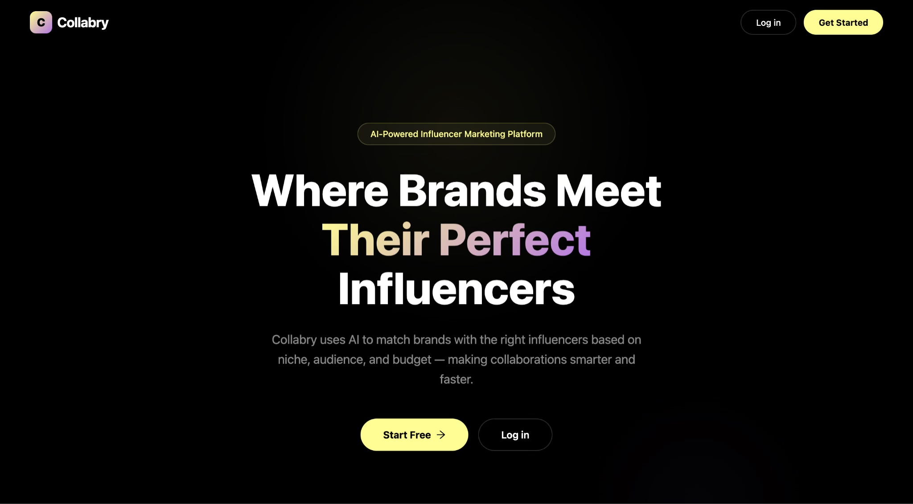
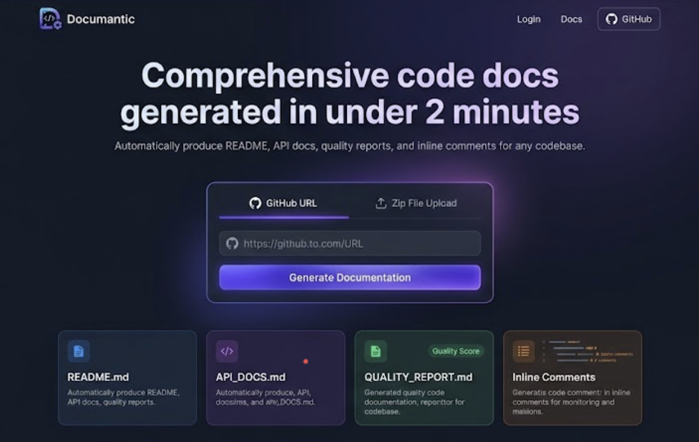
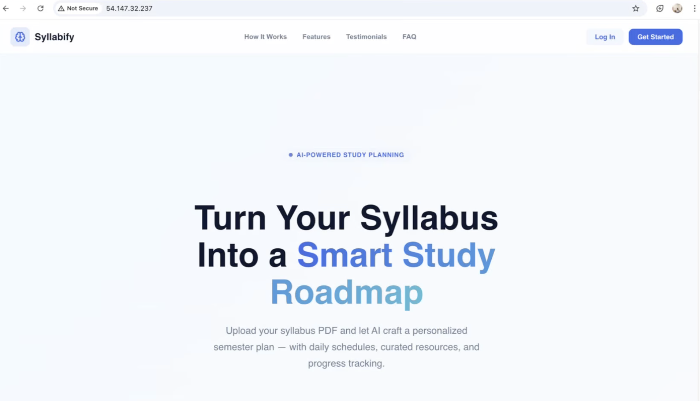
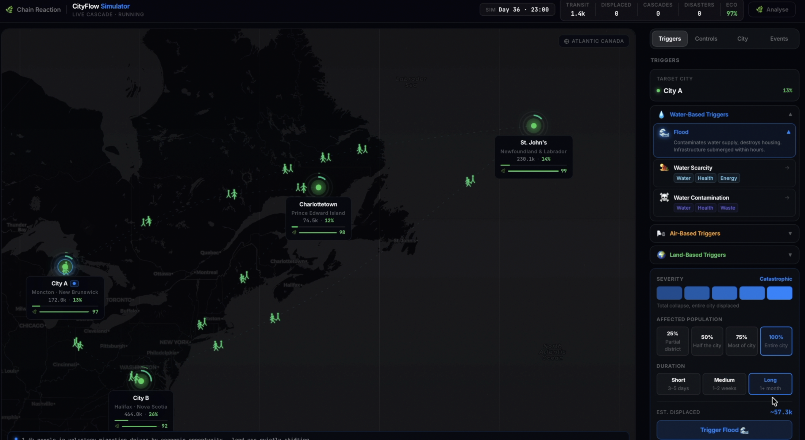
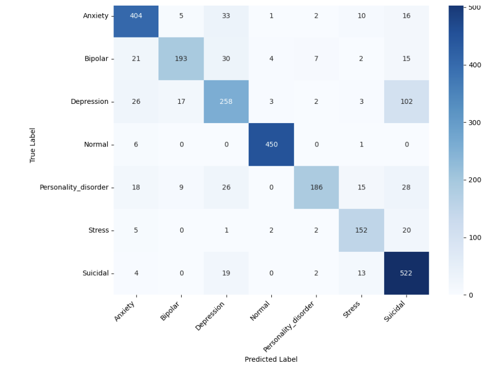
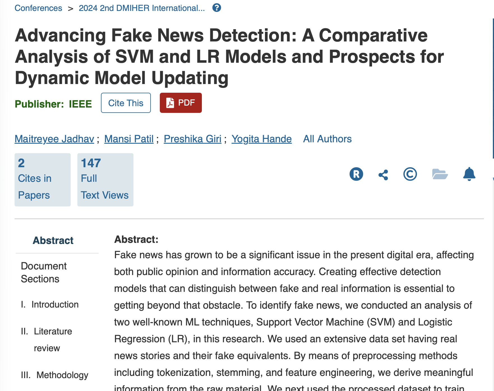

Pinned Projects
JavaPythonTypeScript
CloudFull-StackDistributed SystemsML
 Live
Livecorebank
2026 · Java
20 automated tests, 5 levels
 Live
LiveFundEd
2026 · TypeScript
312 automated tests, 3 languages

spindle
2026 · Java, C++
12 C++ tests, zero framework

SmartCare (SAWS)
2026 · AWS/GCP
Led architecture for a 7-person team

DriftWatch
2026 · Python
98.5% accuracy on the live classifier

Collabry
2026 · React 19
Built the AI matchmaker + payments
None of the pinned projects use this — try "All Repositories" below, or clear the filter.
All Repositories
PythonReactServerless
Machine LearningResearchTerraform
3.99 GPA

Documantic
2026 · React
Generates docs in under 2 minutes

Syllabify
2026 · Terraform
Turns a syllabus PDF into a schedule
 Video
VideoFantasySailGP
2026 · Python
Built the ML scoring engine

VideoEcoBridge
2026 · React
Built the chain-analysis view and map

Beyond Keywords
2026 · PyTorch
82% accuracy across 7 classes

Fake News Detection
2025 · IEEE
147 IEEE Xplore full-text views
No repository uses this skill yet — check back as more projects get added.
Skills & Tools
JavaPythonTypeScriptC++SQL
AzureAWSGCPKubernetesDockerTerraform
ReactNext.jsSpring BootNode.js
PostgreSQLMongoDBRedis
PyTorchscikit-learnPower BITableau
Click a skill to see the projects that use it.